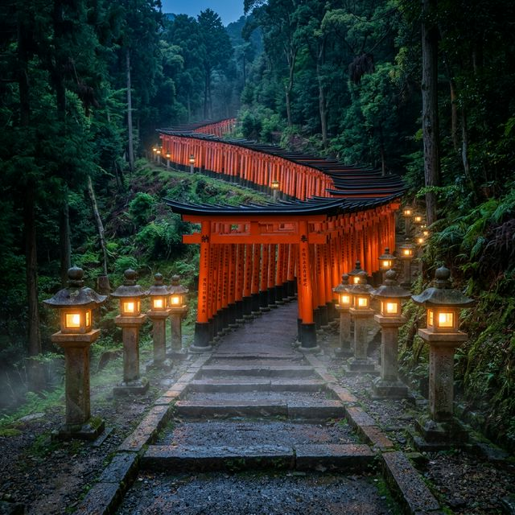
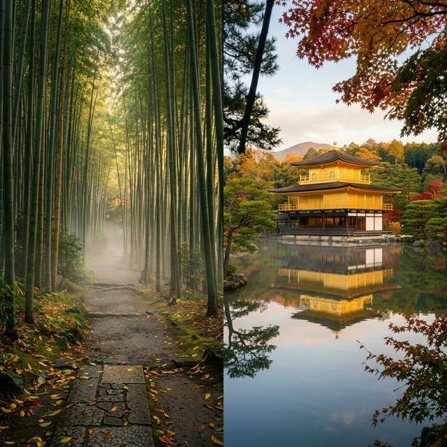

Only 70 minutes by shinkansen from Tokyo. Karuizawa is a unique highland that has coexisted with birch forests, waterfalls, chapels, and top-class resort hotels since the Meiji era. This model course is designed to allow you to fully experience the diverse facets of Karuizawa from the bustling Old Karuizawa Ginza to the tranquility of Shiraito Falls, and the leisurely mornings in the Hoshino area over 2 nights and 3 days.
📌 Best Season
The recommended seasons are July-August (fresh green, summer retreat) or October-November (autumn leaves). During GW (Golden Week) and Obon, accommodation prices soar and it gets extremely crowded, so it's advisable to avoid those periods if possible.
📅 Model Course by Day
- 14:00Check in at a ryokan/hotel (the Old Karuizawa area is convenient)
- 16:00Stroll through Old Karuizawa Ginza Street (shops selling jam and grilled corn lined up)
- 17:30Enjoy a quiet moment at the Show Memorial Chapel
- 18:30Dinner (at "No One" in Brastone Court or a Western restaurant in Old Karuizawa)
- 20:00Night walk on the tree-lined path — a fantastic view of streetlights and birch trees
- 08:00Relax with hotel breakfast
- 09:30Rent a bicycle and head to Lake Yagasaki - Show Memorial Chapel area (¥1,200/day〜)
- 11:30🌊 Shiraito Falls (a 70m wide natural waterfall. The air is cool even in summer)
- 13:30Lunch & stroll at Taliesin lakeside resort
- 16:00Café time in Old Karuizawa (old establishments like "Riyambou" are scattered)
- 19:00Dinner at "Onkyo" — handmade soba noodles using locally sourced buckwheat (reservation required)
- 09:00Morning at a café in Harunire Terrace (the dappled sunlight by the riverside is pleasant)
- 10:30Kumba Pond (Swan Lake) — the reflection of the blue sky on the birch trees and surface of the water is exquisite
- 12:30Karuizawa Prince Shopping Plaza (one of the largest outlets in Japan)
- 15:00Return home via Hokuriku Shinkansen from Karuizawa Station (as short as 70 minutes to Tokyo)


🏡 Recommended Accommodations
Karuizawa offers a variety of accommodations from ryokans to international resorts. In particular, "Brastone Court" in the Hoshino area and the long-established "Mannpei Hotel" in the Old Karuizawa area are reputed to offer unique staying experiences. Since many seasons require early booking, it's advisable to check in advance on Booking.com.
💡 Budget Tips
During high season (July-August, October), accommodation prices can rise to 2-3 times the usual rate. Utilizing weekdays or the off-season in June and September can offer significant discounts even at the same hotel.